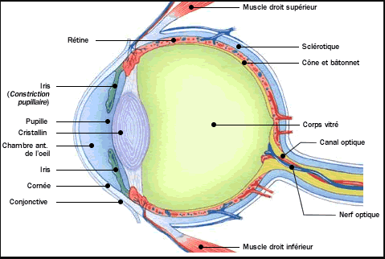
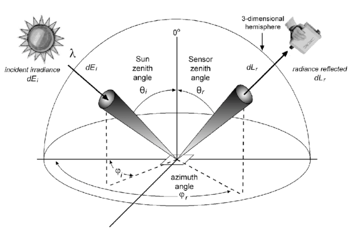
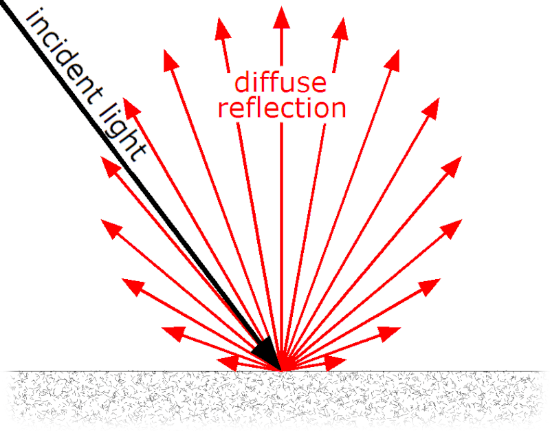

La couleur est une phénomène qui dépend, d’une part, de la physique de la lumière et son interaction avec les matériaux, d’autre part, de l’interprétation des phénomènes résultats par le système visuel humain.

Figure 1: Coupe de l’oeil humain
La figure 1 présente une coupe de l’oeil humain. L’iris joue le rôle du diaphragme de l’appareil photographique et la pupille celui de la lentile. L’image se forme sur la rétine qui est la surface de l’oeil sensible à la lumière. Sur la rétine, il existe deux types de cellules photo céceptrices qui transforment la lumière en impulsions nerveuses: les cônes et les bâtonnets. Les bâtonnets sont plus sensibles à la lumière que les cônes et permettent la vision nocturne. Les cônes servent à la vision des couleurs et à la vision diurne.
Il existe trois type de cônes, qui diffèrent suivant leur sensibilité aux longueurs d’ondes: certains sont sensibles aux courtes longueurs d’ondes (cônes bleus), les autres ont une sensibilité maximale à 535 nm (cônes verts) ou à 575 nm (cônes rouges).
Le mécanisme visuel correspond au schéma suivant: un stimulus externe provoque l’activation d’un cône ou d’un bâtonnet qui produit une transition photochimique, laquelle induit de l’influx nerveux. Les impulsions nerveuses fournis par les cônes sont recombinées en trois nouveaux canaux: le premier indique la luminance, le deuxième la différence entre le rouge et le vert et le troisième la différence entre le jaune et le bleu.
Depuis des années, la synthèse d’images s’applique à définir des modèles de réflexion simulant le plus fidèlement possible la réponse d’un matériau quelconque à une incidence lumineuse. Cependant, l’interaction entre la lumière et la matière est un problème très difficile à modéliser parfaitement en raison de sa complexité. Maintenant, cette interaction est appliquée à de nombreux objectifs tels que la simulation physique ou le rendu temps réel. Et un des techniques qu’on utilise souvent pour ce calcul est la fonction de BRDF.

Figure 2: Le modèle de BRDF
La luminance est une mesure radiométrique définissant la qualité d’énergie, dans notre cas l’énergie lumineuse, qui est émise ou reçue par une surface élémentaire dans un angle solide élémentaire autour d’une direction donnée. La luminance s’exprime en Watts par unité d’aire et par unité d’angle solide W.m − 2.sr − 1. L’énergie qui arrive sur une portion de surface dans une portion d’angle solide dωi:
$$dL_i(x, ω_i) = L_i(x, ω_i) cos(\vec{N_x}, ω_i) dω_i$$
avec:
La fonction de distribution de la réflectance bidirectionnelle (BRDF) décrit la réflextion d’une onde lumineuse sur une surface. En effet, pour une direction d’éclairement ωi et une direction de réflexion ωr, la BRDF est le rapport de la luminance réflechie en un point x d’une surface infinitésimale d’aire dA à l’éclairement incident à celle-ci.
$$f_r(x, ω_i, ω_r, λ) = f_r(x, θ_i, Φ_i, θ_r, Φ_r, λ) = \frac{dL_r(x,θ_r, Φ_r, λ)}{dL_i(x, θ_i, Φ_i, λ)} = \frac{dL_r(x,θ_r, Φ_r, λ)}{L_i(x, θ_i, Φ_i, λ) cosθ_i dω_i}$$
avec:

Figure 3: Lambertian reflectance
Le modèle de Lambert, qui suppose une surface parfaitement diffuse. C’est-à-dire que la lumière est réflechie de façon équiprobable par le matériau dans toutes les directions. La BRDF est donc constante et indépendante des directions d’éclairement, de réflexion, et de la longueur d’onde:
$$f_r(ω_i,ω_r) = \frac{1}{π}$$
En réalité, les surfaces ne réflechissent qu’une partie de la lumière (l’autre étant absorbée). C’est pourquoi on utilise parfois le modèle suivantpour caractériser une surface dite Lambertienne:
$$f_r(ω_i,ω_r) = \frac{C}{π}$$
avec:
C est le longueur d’onde de la lumière
À côté de la fonction BRDF, il existe aussi des autres fonctions qui s’adaptent aux différents type de matériaux, tels ques:
Bidirectional Transmittance Distribution Function (BTDF): Le cas où la lumière est réfracté complètement
Bidirectional Scattering Distribution Function (BSDF): Le cas où une partie de la lumière est diffusée tandis que l’autre est réfracté.
Bidirectional Sous-Surfaque Reflectance Distribution Function (BSSRDF): Le cas où la lumière est diffusée sous la surface d’un matériel (la peau).
Dans la section avant, on a vu le modèle qui permet de calculer l’éclairement d’une surface de manière locale, c’est-à-dire sans prendre en compte la participation de l’ensemble des objets constituant une scène dans l’apparence d’un seul objet. En effet, elle ne prennent en compte que la réflexion directe des sources de lumières, alors que la lumière peut subir plusieurs réflexions avant d’atteindre un objet.